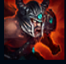
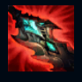
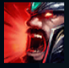
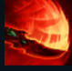
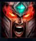

Tryndamere
| Tryndamere The Barbarian King | |
|---|---|
| Release date | 01.05.2009 |
| Class | Skirmisher |
| Positions | Top |
| Resource | Fury |
| Range type | Melee |
| Adaptive type | Physical |
| Base statistics | |||
| Health | 626 – 2292 | Resource | N/A |
| Health regen. | 8.5 – 23.8 |
Secondary Bar | Fury (100) |
| Armor | 33 – 85.7 | Attack damage | 69 – 131.9 |
| Magic resist. | 32 – 53.25 | Crit. damage | 175% |
| Move. speed | 345 | Attack range | 125 |
Mânat de o furie turbată și neînfrânată, Tryndamere și-a croit odinioară drumul prin Freljord, provocându-i la luptă pe cei mai iscusiți luptători nordici pentru a se pregăti de zilele negre ce urmau să vină. Cuprins de furie, barbarul vrea să se răzbune pe cei care i-au anihilat clanul. Recent, s-a întovărășit cu Ashe, o războinică-mamă avarosană, și și-a găsit locul alături de poporul ei. Puterea și rezistența sa sunt legendare, aproape inumane, aducându-le noilor săi aliați nenumărate victorii în bătălii ce păreau lipsite de orice speranță. |  |
FURIA RĂZBOINICULUI Tryndamere dobândește ''Furie'' cu fiecare atac, lovitură critică și lovitură mortală. ''Furia'' îi crește pasiv șansele de lovitură critică și poate fi consumată de ''Sânge învolburat''. |
||
|---|---|---|---|---|
 |
SÂNGE ÎNVOLBURAT Tryndamere se hrănește cu energia luptei și, cu cât este mai grav rănit, cu atât daunele sale din atac cresc. Poate folosi ''Sânge învolburat'' pentru a-și potoli furia și a se vindeca. |
|||
 |
STRIGĂT ZEFLEMITOR Tryndamere scoate un răget asurzitor, reducând daunele din atac ale campionilor din preajmă. Inamicilor care stau cu spatele la Tryndamere le este redusă și viteza de mișcare. |
|||
|  |
LOVITURĂ ROTITĂ Tryndamere se îndreaptă către o țintă, provocând daune tuturor inamicilor din calea sa. |
|||
 |
FURIE NEMURITOARE Tryndamere devine atât de însetat de luptă încât nu mai poate să moară, oricât de grav rănit ar fi. |